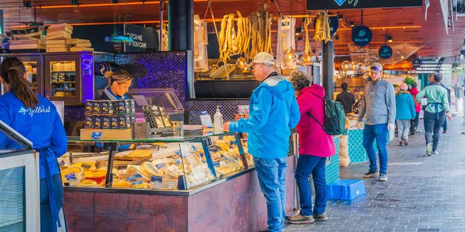
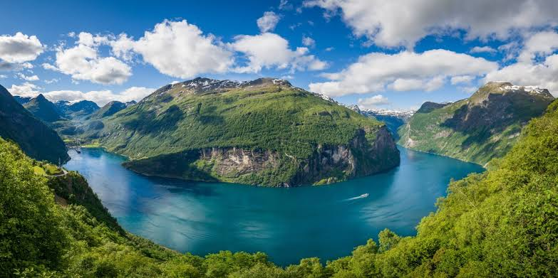
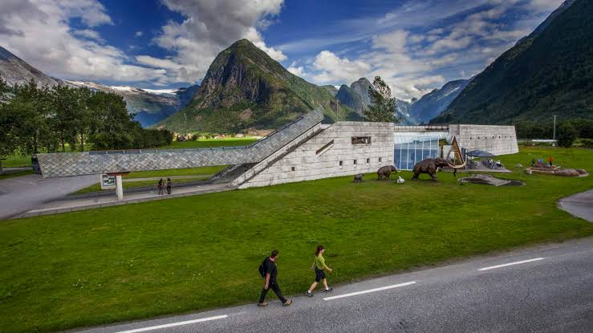

Step into Norway, where majestic fjords, rugged mountains, and Northern Lights illuminate the sky. Dive into Oslo's vibrant culture, wander through Lofoten's picturesque villages, and immerse yourself in Norway's rich Viking heritage.
Find HelpCreate Memories That Last a Lifetime
Explore well-preserved Viking ships dating back to the 9th century. Witness Viking history and culture firsthand through artifacts and exhibitions.
Experience the vibrant atmosphere of Norway's most famous fish market. Sample fresh seafood and local delicacies while enjoying scenic views of Bergen's waterfront.
Discover the breathtaking beauty of Norway's UNESCO-protected Geirangerfjord, known for its stunning landscapes, cascading waterfalls, and pristine natural surroundings.
Learn about glaciers and their impact on the environment through interactive exhibits and multimedia displays. Discover the history of glaciers in Norway and their significance.
Select attractions, restaurants, and activities to create your custom itinerary and book now.
Norway's Viking Ship Museum in Oslo and Geirangerfjord in Møre og Romsdal left us speechless. A perfect blend of history and natural beauty!
The Norwegian Glacier Museum in Fjærland and Bergen Fish Market in Bergen were highlights of our trip. Educational and delicious!